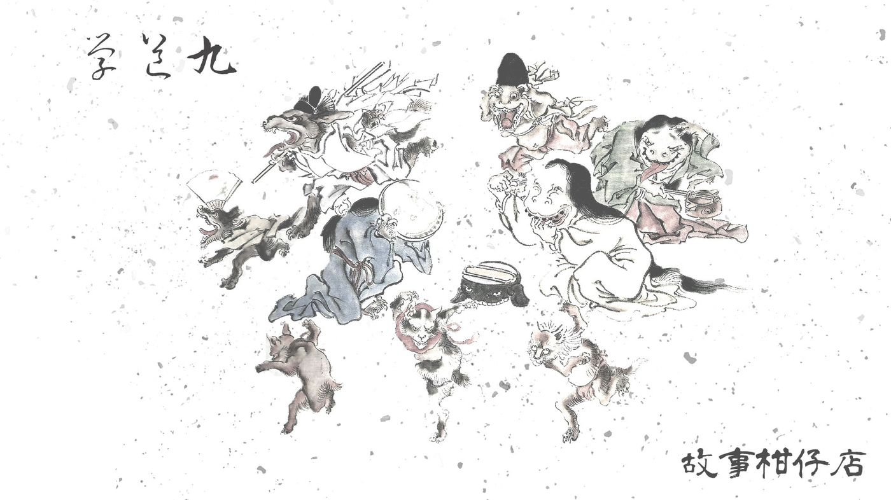
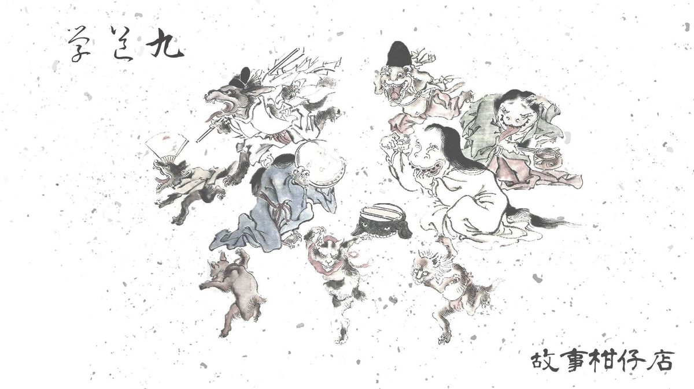

玄墨行者．學道（九）

魚又躍出湖面，撞破了一圓月影，尾鰭啪啪拍打，像極了鷹振翅的聲響。
「真的有魚呢。」玉衡多麼感謝這隻魚的出現。尤其在她說完那十七年前的往事之後。
其實她本來只想含混帶過，反正陳年破事，有什麼好斤斤計較。但不知怎麼的，望著滿天星斗，她就這麼一股腦地說完了，說清了，說盡了。
這輩子，她倒也算對天璣沒有任何隱瞞了。
只是說完才發現，天空裡那顆小妖星，原來最靠近北斗中的天璣星。
「老四倒是明眼人呢。平常什麼都不吱聲。」天璣逕自笑了，他真沒想到沈默寡言的天權，居然把大師兄天樞看得這麼透。
玉衡笑不出來，她曾經親臨過那樣的煉獄，而她又親見煉獄出自天樞與天璇之手。她仍然相信收妖是玄墨行者的天命，然而背信忘約又趕盡殺絕，不應該。
「早點睡吧。」天璣說道。天空依舊一片漆黑，原來一段過往這麼驚心動魄，卻連破曉也等不著。
不等玉衡，天璣便收了釣竿，往孤峰走去。沿途踩踏草葉的聲音，聽來多麼肅殺，就像方才聽聞的故事。
其實天璣並不意外，只是他沒想到故事的原貌比想像中醜惡。
他繞過孤峰，撥開蔓生草叢步下一條蜿蜒如蛇的小徑，立在一片參天樹林前，舉起雙手，低喝一聲：「開！」
纏綿林枝竟往兩旁倒去，現出兩排以細緻木樁鑲嵌而成的隔間，隔間裡關著形形色色的妖物：天上飛的、水裡游的、地上爬的、竊衣的、食人的、隻手遮天的，應有盡有。
妖物們見天璣進來，紛紛起了騷動。嚶嚶哭泣、激憤嘶鳴、刺耳獰笑、心神發狂的暴吼回盪在空中，揉成一首世間最令人不忍聽的旋律。
不久前被鎖進來的黑狗妖不斷狂吠，一邊向前衝撞，碰著了木樁，發亮的黑色毛皮便灼出一圈禿禿血痕。黑狗喲哀嚎著驚跳起來，瑟縮角落發出低吼。
這是鎮妖庫，鎖著玄墨行者收服的所有妖物，木樁已被施咒，若有意潛逃，必定落得魂飛魄散的下場。那些早就嘗過皮開肉綻滋味的妖物，都不敢輕舉妄動。
天璣望著那兩排鋪天蓋地彷彿看不見盡頭的隔間，面容哀戚，像是懺悔般地低語：「過去以為收了你們，天下太平。到頭來，竟是毀了大家的根。」
霎時間，所有的哭泣、低鳴、痛嚎，就像受了潮的塵埃一般沉了下來，無聲地落在天璣的腳邊。
月光淒清灑落山谷，就像每個再尋常不過的夜。
從那夜起，玉衡總有點避著天璣，可能是不願再多被問些什麼。天璣倒是自在得很，山上的日子，每日晨起教拾兒撥琴弄弦，驗收拾兒體術功夫，此外沒別的了。
最樂的是拾兒，他高興師父待在山上陪他，否則他都要怨了：明明玄墨有七者，怎麼偏偏蒙叟最常差師父下山收妖。
日子一天天過得像行雲流水，拾兒突然想起《玄墨宗譜》那首殘缺的詩，趁著出門挑水時，纏著天璣問個不停。
天璣不答，反而問：「拾兒，還有多久滿十八？」
「再一個月吧！」
「待你成年，就會收到這首詩。」
按照玄墨一門的習俗，傳人成年當天得經過成年禮的試驗，通過之後，才算真正有了承接師父名諱的資格。
不過，由於玄墨一門多是孤兒棄子，鮮少有確切出生日期，正確來說，成年禮都選在入門日進行。
三個傳人中，大曲年紀最大，唯獨他通過了成年禮，拾兒自然又要纏著他問東問西。
「成年當天有雞腿吃嗎？」
「那時大師伯有準備禮物給你嗎？」
「成年後你有去偷買菸嗎？」
面對這些提問，大曲一概冷處理，只是靜靜地溫書、抄寫功課，就當耳邊來了隻趕不走的蚊子。
「大曲，聽說成年禮當天就可以見到蒙叟了，他是個什麼樣的人啊？」
趕不走的蚊子，終究會叮上來的。大曲規律撇捺的字跡頓了一下，想了想，才又開始了下一劃。
「師兄，別老是問這麼沒營養的問題好不？」虹月在旁邊也不耐煩了。但並不是因為拾兒的多嘴，而是這段時間以來，三師伯似乎一日比一日消瘦了。人的血肉竟能萎縮得如此迅速嗎？
－－－－－
#新連載依舊兩天一篇每晚準時六點半喔
#請人客多多指教
#記得去各大書店買我們的書故事柑仔店哩
